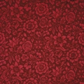

|
|
|
Ordering Information: We encourage our customers to request a sample of actual wallpaper for color reference prior to ordering. Samples are available for $2 each. Our hand-printed wallpapers are shipped in bolds up to 24 yards to minimize waste.
All hand-printed wallpapers are UNTRIMMED and UNPASTED.*
3 roll minimum order. *except Hiawatha which is a machineprint, pre-trimmed, and packaged by double roll.
Prices are for the single roll, which covers 30 square feet.
Shipping charge $15.00 minimum and $3.00 per roll after 5 rolls.
Custom coloring is available for a 30% surcharge with an 18 roll minimum.
Strike-offs (a test sample) are $150.00+ depending on design).
Acrylic coating (suggested for some kitchen and bath applications) is $15.00 per roll additional.

|
Associated Artists® Collection: designs from the studio of Candace Wheeler A major addition to the Associated Artists® Collection from Burrows Studio is the Honeybee Wallpaper and Frieze by Candace Wheeler, designed in 1881. This collection includes art wallpaper, printed fabric and lace curtains. Candace Wheeler: The Art and Enterprise of American Design, 1875 - 1900 An exhibition at the Metropolitan Museum of Art,, October 10, 2001 - January 6, 2002 in New York, NY. Candace Wheeler (1827 - 1924) was America's first important woman textile and interior designer. |
|
by Candice WheelerClick on picture for a link to our
Honeybee Wallpaper
A Note on William Morris Wallpapers, Fabrics and Carpets.
The Norwood-Day Collection: Priory
Garden, Phillimore Wreath, Chrysanthemum, Peruvian Lily,
Kensington, Sandringham, Depden. Rolls of the
original papers were recently found in the attic of the
Fred Holland Day house,
owned by the Norwood
Historical Society, in Norwood, Massachusetts. In 1893
Day demolished his parent's Mansard roofed Italianate house
and, inspired by architecture seen in England, rebuilt the
house with a brick, timber and stucco Tudor facade and an
Arts & Crafts Movement interior, dominated by a three
story central hall overlooked with balconies and interior
oriel windows from upper rooms. Fred's rooms were decorated
in artistic English taste with green woodwork and
wallpapers. His parent's rooms were outfitted with Old
Colony Style white painted woodwork. Following the advice of
William Morris, these rooms were decorated with wallpapers
hung without borders and had plain painted ceilings. This
was the cutting edge of style in New England in the late
nineteenth century, turning away from the heavily elaborated
decorations of the High Victorian period.

 "Coleman Bower"
A late 19th century wallpaper in the manner of William Morris, available in four colors Century Red (shown) Soft Green, Butterscotch and Terra Cotta.
$165 a single roll. Each roll is 6 yards long, with a width of 20 3/4" and a 14" self match vertical repeat.
Click here for a larger image of the Coleman Bower Wallpaper.
 "Priory
Garden" An English Design. This pattern pays homage to the style of William Morris, the great
19th century English wallpaper designer. The foliage is reminiscent to "Larkspur" and the
organization of the pattern, with a meander of foliage counterpointed by a grid of flowers, is like
"Marigold," but this pattern has major and minor flowers set on the diamond points of a diaper
pattern. The document colorway has soft, tertiary hues popular in the 1880s and early 1890s, when it was
originally produced. It draws its inspiration from Morris without copying the master's work; it is a
sophisticated design with its own character and integrity. Priory Garden was selected by Fred Holland
Day for his father's bedchamber in the Norwood, Massachusetts, house. 21" wide with a self match
repeat of 11 7/8". 6 yard long rolls, covering 30 square feet. Hand printed in New England.
Documentary coloring combines tertiary hues of sage, green, ochre and blue.
$175.00 per roll.
"Priory
Garden" An English Design. This pattern pays homage to the style of William Morris, the great
19th century English wallpaper designer. The foliage is reminiscent to "Larkspur" and the
organization of the pattern, with a meander of foliage counterpointed by a grid of flowers, is like
"Marigold," but this pattern has major and minor flowers set on the diamond points of a diaper
pattern. The document colorway has soft, tertiary hues popular in the 1880s and early 1890s, when it was
originally produced. It draws its inspiration from Morris without copying the master's work; it is a
sophisticated design with its own character and integrity. Priory Garden was selected by Fred Holland
Day for his father's bedchamber in the Norwood, Massachusetts, house. 21" wide with a self match
repeat of 11 7/8". 6 yard long rolls, covering 30 square feet. Hand printed in New England.
Documentary coloring combines tertiary hues of sage, green, ochre and blue.
$175.00 per roll.
Click here for a larger image of the Priory Garden Wallpaper.
 "PhillimoreWreath" An English Design. In the style of the Arts & Crafts Movement from the
early 1890s, this pattern adapts the common formality of large Neo-classical laurel wreaths with
asymmetrical groupings of softly drawn leaves. Each wreath is approximately 12" in diameter, and
they are spaced in a diaper pattern at 18" on center. 21" wide with a self match repeat of 26
1/2". 6 yard long rolls, covering 30 square feet. Hand printed in New England. Offered in gold on
olive ground.
$155.00 per roll.
"PhillimoreWreath" An English Design. In the style of the Arts & Crafts Movement from the
early 1890s, this pattern adapts the common formality of large Neo-classical laurel wreaths with
asymmetrical groupings of softly drawn leaves. Each wreath is approximately 12" in diameter, and
they are spaced in a diaper pattern at 18" on center. 21" wide with a self match repeat of 26
1/2". 6 yard long rolls, covering 30 square feet. Hand printed in New England. Offered in gold on
olive ground.
$155.00 per roll.
Click here for a larger image of the Phillimore Wreath Wallpaper.
"Chrysanthemum", an English design. A pattern from c. 1890 of lacy leaves and flowers, this print has a delicate figure that rests gently on the wall. In style it is like a freely organized and simplified version of a design of William Morris, and the original artist certainly owed much to the inspiration of the great English designer. 21" wide with a self match repeat of 18". 6 yard long rolls, covering 30 square feet. Hand printed in New England. Offered with off white figure on a sage-ochre ground (the document coloring) and an off white figure on a rose ground. $155.00 per roll.
Click here for a larger image of the Chrysanthemum Wallpaper.
 "Peruvian Lily," an English design. The flower of this design from c. 1890 was identified by
friend who is a horticulturist in Oakland, California. Abstracted in the manner of the finest Arts &
Crafts Movement designs, this pattern has a simplicity and elegance that is achieve with the simple use
of color. 21" wide with a self match repeat of 20 7/8". 6 yard long rolls, covering 30 square
feet. Hand printed in New England. Offered with off white figure on a pale grey-blue ground (the
document coloring) and an off white figure on a moss green ground. A third colorway is being
experimented with - a warm golden yellow ground with white figures.
$155.00 per roll.
"Peruvian Lily," an English design. The flower of this design from c. 1890 was identified by
friend who is a horticulturist in Oakland, California. Abstracted in the manner of the finest Arts &
Crafts Movement designs, this pattern has a simplicity and elegance that is achieve with the simple use
of color. 21" wide with a self match repeat of 20 7/8". 6 yard long rolls, covering 30 square
feet. Hand printed in New England. Offered with off white figure on a pale grey-blue ground (the
document coloring) and an off white figure on a moss green ground. A third colorway is being
experimented with - a warm golden yellow ground with white figures.
$155.00 per roll.
Click here for a larger image of the Peruvian Lily Wallpaper.

"Kensington", an English design. Early 1890's. A striking all over figure of classic arabesques with palmettes, this design seems right in spirit with the paintings of Lord Leighton and Alma Tadema and the fashionable artistic neighborhoods of Kensington at the end of the nineteenth century. The near perfect symmetry (offset by one central irregular flower) has opened suggestion of using the print sideways as a wide frieze or dado pattern. In bold colors it is crisp and daring, and in muted colors it is feathery and delicate. 20 1/4" wide with a self match repeat of 15 3/4". 6 yard long rolls, covering 30 square feet. Hand printed in New England. Document coloring in brilliant red with white figures (we are still experimenting with this colorway), and offered in moss green with white figures and celadon green with putty figures. $165.00 per roll.
Click here for a larger image of the Kensington Wallpaper.

"Sandringham", an English Design. Named for the Norfolk country house of Queen Victoria, it possibly was originally designed for a new wing constructed in the 1880's. Documents indicate that this pattern was also originally made as a printed fabric. It has a large repeating figure of banded Acanthus leaves, conventionalized in a formal manner. It is an ideal design for a stairhall, and also is well suited for use in a deep band above a high wood paneled wall. 20 3/4" wide with a 21" self match. 6 yard long rolls, covering 30 square feet. Hand printed in New England. Document color in olive on a light olive ground. Offered in a sage green on a putty ground, and a golden yellow-ochre on an off white ground. $155.00 per roll.
Click here for a larger image of the Sandringham Wallpaper.

"Depden", an English design. In style, this pattern could date from the late 1870's through the 1880's. In 1893, at the Day House in Norwood, it was used on the lower wall under a wide frieze of "Sandringham". It is a good design for the dado (as a band of ornament at the bottom of the wall below the chair-rail), or wherever a small repeating figure is needed. 20 3/4" wide with a 3 1/2" self match (the screen repeat is much larger). 6 yard long rolls, covering 30 square feet. Hand printed in New England. Documentary coloring in deep shades of olive green. $165.00 per roll.
Click here for a larger image of the Depden Wallpaper.

"Arbella", an English design. This design was found in a handsome Queen Anne Revival house that was built in the early 1890's in Worcester, Massachusetts. It originally hung in the stairhall over a paneled wainscot. The figure of medallions and arabesques was inspired by "old-fashioned" patterns of the early 18th century, during the reign of Queen Anne (1702 - 1714), and the coloring is drawn from the mellowed colors of old English painted furniture. It looks very well with white painted woodwork and paneling, and also compliments the natural wood colors of cherry and oak, all popular finishes in the 1880's and 1890's. 20 1/2" wide with a 19" self match. 6 yard long rolls, covering 30 square feet. Hand printed in New England. Documentary coloring with an indigo blue background and accent colors of terra cotta, green, sage and gold, with outlines and arabesques in off white. $185.00 per roll.
Click here for a larger image of the Arbella Wallpaper.

"Lily & Rose", a Scottish design. Originally made by the firm of George Walton & Co., and is attributed to have been drawn by Robert Graham. It is a fluid design with tendrils of lilies climbing in a diagonal line through a diaper pattern of conventionalized rose blossoms, thus incorporating the favorite flowers of the English and Scottish Arts & Crafts Movements. We have initially developed this print as a rotary screen print and the specifications are: 28 1/2" wide with a 12 1/2" self match. 5 yard rolls, covering 30 square feet. Printed in California. A flat screen print of the pattern is being developed at a slightly smaller scale: 21" wide with a 11" drop match. 6 yard rolls, covering 30 square feet. Hand printed in New England. The first sampling is in a turquoise blue on an off white ground. $125.00 per roll.
Click here for a larger image of the Lily & Rose Wallpaper.

"Rossetti", by Aldam Heaton. Called the Neo-Classical Arts & Crafts designer, Aldam Heaton practiced interior design in London and worked closely with the noted architect Richard Norman Shaw. This wallpaper was found in the hallway of a country house in Wellesley, Massachusetts, where it was originally hung in 1884. It was named by Heaton in memory of his friend, Dante Gabriel Rossetti. Two 21" widths of paper are needed for the complete 42" wide pattern, with a drop match of 42". 6 yard long rolls, covering 30 square feet. Hand printed in New England. Offered in shades of light terra cotta on a yellow ochre ground (the document colorway). $165.00 per roll.
Click here for a larger image of the Rossetti Wallpaper.

"Giotto", by Aldam Heaton. This underpattern for Rossetti was originally offered as a separate print. 21" wide with a 21" self match repeat. 6 yard long rolls, covering 30 square feet. Hand printed in New England. Offered in shades of yellow ochre (a document colorway), and in celadon green. $155.00 per roll.
Click here for a larger image of the Giotto Wallpaper.

"Ginko Leaf", a Japanese design. Published in 1885 in the New York magazine Art & Decoration, this Japanese design was suggested for manufacture as a wallpaper by the editor, George Halm. 27" wide with a self math repeat of 8 1/4". 5 yard long rolls, covering 30 square feet. Hand printed in New England. Offered in shades of pale gold on a cream ground, and in celadon green. $135.00 per roll.
Click here for a larger image of the Ginko Leaf Wallpaper.

"Summer Street Damask", attributed to John Dando Sedding. A subtle design of figs and fig leaves in a transitional Arts & Crafts Movement and Art Nouveau pattern, it was originally made in England. Sedding was noted as a church designer who apprenticed with Street; in the 1880s his office was next door to the shop of Morris & Co. in London. The reproduction comes from original rolls that were bought for a house in Kennebunk, Maine in 1885. 21" wide with a self match of 36". 6 yard long rolls, covering 30 square feet. Hand printed in New England. Offered in tone-on-tone shades of terra cotta (adapted from the document colorway), celadon green, sorrel and a rose on off white colorway. $155.00 per roll.
Click here for a larger image of the Summer Street Damask Wallpaper.

"Persis Wall", an English Design. An anonymous English design representative of the Aesthetic Movement and early Arts & Crafts Movement. The figure appears as a random spray of eucalyptus leaves, interspersed with gilt blossoms that appear and fade across the wall. It is a particularly effective pattern on which to hang artwork, or in hallways and rooms with walls cut up by many doors and windows. The original was found in under woodwork in the old shop of Burrows & Co. in Boston, and historic photographs show the same design in a villa near Sidney, Australia, where it had been installed around 1880. 21" wide with a drop match of 21". 6 yard long rolls, covering 30 square feet. 6 yard long rolls, covering 30 square feet. Hand printed in New England. Offered in shades of sage green (the document colorway), terra cotta, pale gold on cream, and celadon green. A colorway of green leaves on a deep lacquer green ground is available by special order. $165.00 per roll.
Click here for a larger image of the Persis Wall Wallpaper.
"Persis Frieze" A companion to Persis Wall, the frieze was inspired by a stencil in an early 1880's house in California. The geometric pattern of the frieze makes a successful counterpoint with the random nature of the wall pattern. Frieze trims to 11" high and is printed with 2 side by side on the roll, and it is sold by the yard. Hand printed in New England. Offered in shades of sage green, terra cotta, pale gold on cream, and celadon green. $35.00 per yard.
Click here for a larger image of the Persis Frieze Wallpaper.
 "Persis
Ceiling" A companion to Persis Wall and inspired by the crazed pattern effect traditional to
Japanese design, this paper is equally successful on the ceiling or as a wallpaper. 21" wide with a
21" drop match repeat. 6 yard long rolls covering 30 square feet. Hand printed in New England.
Offered in light shades of sage green, terra cotta, pale gold on cream and celadon green.
$165.00 per roll.
"Persis
Ceiling" A companion to Persis Wall and inspired by the crazed pattern effect traditional to
Japanese design, this paper is equally successful on the ceiling or as a wallpaper. 21" wide with a
21" drop match repeat. 6 yard long rolls covering 30 square feet. Hand printed in New England.
Offered in light shades of sage green, terra cotta, pale gold on cream and celadon green.
$165.00 per roll.
Click here for a larger image of the Persis Ceiling Wallpaper.

"Chauncy Frieze" Named for an original owner of the house in Marshall, Michigan, where the paper was found, this gentle meander design looks very good with other figures beneath (Persis, Summer Street, Giotto or Ginko Leaf), and it is handsome above a plain painted wall. The design is c. 1880 - 90. It is 17 1/2" tall, which neatly fits over the picture rail in many American Victorian houses. Sold by the yard. Hand printed in New England. Offered in celadon green, pale gold on cream and sage green. $35.00 per yard.
Click here for a larger image of the Chauncy Frieze Wallpaper.
 |
For more wallpaper patterns, please also see: C.F.A. Voysey Wallpaper and Fabric and Candace Wheeler Fabric and Wallpaper. |
 |